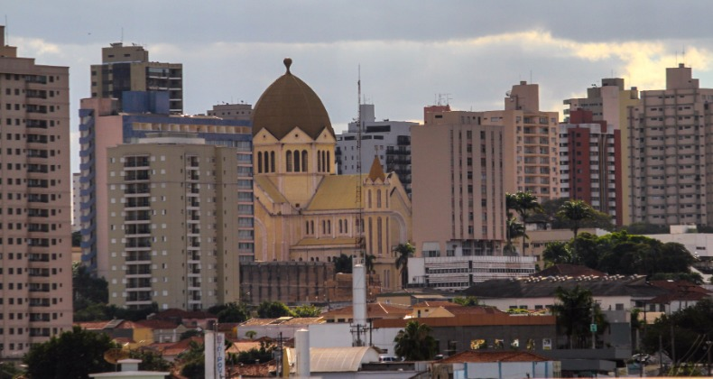

História
No século XVIII, um astrônomo português, em viagem de exploração pelo rio Tietê, se deparou com uma grande cordilheira, cujos reflexos da luz do sol lhe fizeram enxergar uma grande cidade, que ainda não existia. Àquela região os índios guaianá, então seus habitantes, davam o nome de Aracoara (de ará, dia, e coara, toca ou morada).
E foi sob a denominação de Campos de Aracoara, ou Sertão de Aracoara, que entrou para a história a área que abrange desde a margem direita do rio Piracicaba até os confins do norte e oeste do Estado de São Paulo, incluindo os municípios de Araraquara, São Carlos e região.
